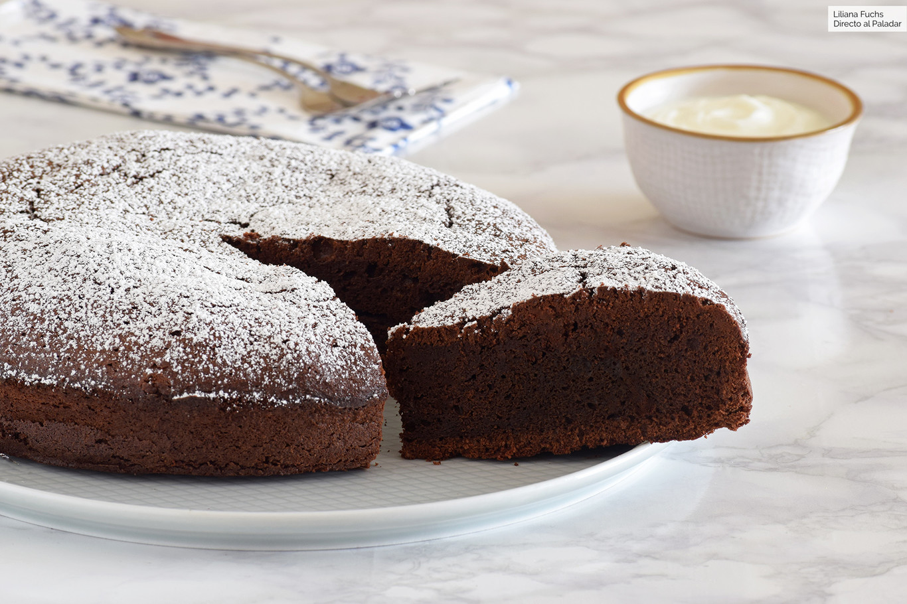

Registrarse
Registrarse
RECETAS SIN TACC
Curry de garbanzos y espinaca
Ingredientes
- 1 lata de garbanzos
- 2 tazas de espinacas frescas
- 1 cebolla
- 1 pimiento rojo
- 1 diente de ajo
- 1 cucharada de curry en polvo
- 1 taza de leche de coco
- Aceite de oliva
- Sal y pimienta
Procedimiento
Pelar y picar la cebolla y el ajo, y cortar el pimiento en tiras. En una sartén grande, calentar aceite de oliva y añadir la cebolla, el ajo y el pimiento. Cocinar hasta que estén tiernos. Añadir el curry en polvo y cocinar por un minuto más. Añadir la leche de coco y los garbanzos, y cocinar por 10 minutos. Añadir las espinacas y cocinar por 2-3 minutos hasta que se marchiten. Sazonar con sal y pimienta al gusto. Servir caliente acompañado de arroz integral.
Ingredientes
- 3 bananas maduras
- 3 huevos
- 1/2 taza de aceite de coco
- 1/2 taza de azúcar integral
- 1 taza de harina de arroz
- 1/2 taza de fécula de mandioca
- 1/2 taza de nueces picadas
- 1 cucharadita de bicarbonato de sodio
- 1 cucharadita de extracto de vainilla
- Una pizca de sal
Procedimiento
Precalentar el horno a 180°C y engrasar un molde para pan. En un tazón grande, aplastar las bananas con un tenedor y mezclar con los huevos, el aceite de coco y el azúcar integral. Añadir la harina de arroz, la fécula de mandioca, las nueces, el bicarbonato de sodio, el extracto de vainilla y la sal. Mezclar hasta que esté todo bien combinado. Verter la mezcla en el molde para pan y hornear durante 45-50 minutos o hasta que esté dorado y un palillo salga limpio al insertarlo en el centro del pan. Dejar enfriar antes de servir.
Pan de banana y nueces
Torta de chocolate
Ingredientes
- 1 taza de harina de arroz
- 1/2 taza de almidón de maíz
- 1/2 taza de cocoa en polvo sin azúcar
- 1 cucharada de polvo de hornear
- 1/2 cucharadita de sal
- 1 taza de azúcar
- 1/2 taza de aceite vegetal
- 3 huevos
- 1 cucharadita de extracto de vainilla
- 1/2 taza de leche sin lactosa o leche de almendras
- 1/2 taza de agua caliente
- 1/2 taza de azúcar glass
- 1/4 taza de cocoa en polvo sin azúcar
- 2 cucharadas de margarina sin lactosa o mantequilla vegana
- 2 cucharadas de agua caliente
Para el glaseado
Procedimiento
Precalentar el horno a 180°C. Engrasar un molde para tortas de 23 cm. En un tazón grande, mezclar la harina de arroz, el almidón de maíz, la cocoa en polvo, el polvo de hornear y la sal. Reservar. En otro tazón, batir el azúcar y el aceite hasta que estén bien combinados. Añadir los huevos uno a uno, batiendo bien después de cada adición. Añadir la vainilla y mezclar. Añadir la mezcla de harina y la leche en dos partes alternando entre ambas y mezclando bien después de cada adición. Añadir el agua caliente y mezclar bien. La masa debe quedar suave y líquida. Verter la masa en el molde preparado y hornear durante 35-40 minutos o hasta que un palillo insertado en el centro de la torta salga limpio. Dejar enfriar la torta en el molde durante 10 minutos, luego desmoldar y dejar enfriar completamente sobre una rejilla. Para preparar el glaseado, mezclar el azúcar glass, la cocoa en polvo, la margarina y el agua caliente en un tazón hasta obtener una mezcla suave. Añadir más agua si es necesario para lograr la consistencia deseada. Verter el glaseado sobre la torta enfriada y dejar que se endurezca antes de servir.
Ingredientes
- 1 taza de harina de arroz
- 1/2 taza de almidón de maíz
- 1/2 cucharadita de sal
- 1 cucharadita de polvo de hornear
- 1 cucharada de aceite vegetal
- 3/4 taza de agua tibia
Procedimiento
En un tazón grande, mezclar la harina de arroz, el almidón de maíz, la sal y el polvo de hornear. Añadir el aceite y mezclar bien. Añadir el agua tibia poco a poco, mezclando bien hasta obtener una masa suave y homogénea. Dividir la masa en 8-10 bolas del mismo tamaño. Colocar una bola de masa entre dos hojas de papel pergamino o papel encerado y aplastarla con un rodillo hasta formar una tortilla delgada de aproximadamente 15 cm de diámetro. Repetir con las demás bolas de masa. Calentar una sartén antiadherente a fuego medio-alto. Cocinar cada tortilla durante 1-2 minutos por cada lado, o hasta que estén doradas y cocidas. Repetir con todas las tortillas. Servir las tortillas calientes rellenas con tus ingredientes favoritos, como carne o pollo, verduras, queso y salsas.